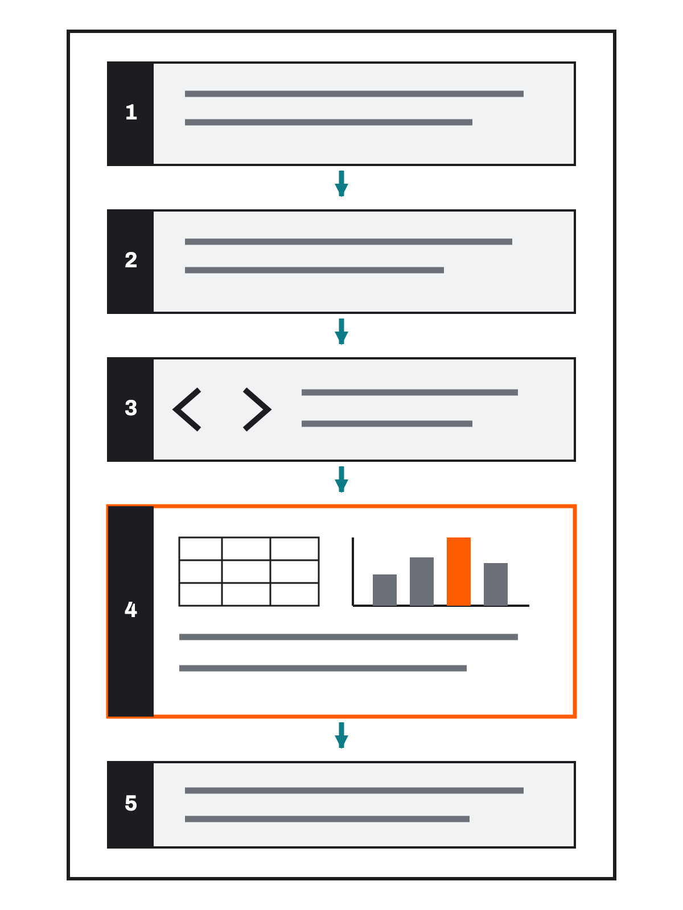

수행평가 1
데이터 시각화实作评价 1
数据可视化
코드 작성 능력이 아니라 판단하고 설명하는 능력을 봅니다.在这节课内做出一张图表、加以解读并提交。
看的不是写代码的能力，而是判断与说明的能力。
오늘의 원칙今天的原则
이번 시간 안에 OpenCode를 사용해 데이터 그래프 하나를 만들고 해석하여 제출합니다. 코드 작성이나 오류 수정 능력이 아니라, 데이터에 맞는 그래프를 만들고 정확하게 해석하는 능력을 확인합니다.在这节课内用 OpenCode 做出一张数据图表、加以解读并提交。考查的不是写代码或修错的能力，而是做出与数据相符的图表并准确解读的能力。
4-2에서 도서관 데이터로, 그 전에 3-2에서 학습 시간 데이터로 같은 순서를 밟았습니다. 오늘 달라진 것은 데이터가 CSV 파일로 주어진다는 점과 혼자 끝까지 한다는 점뿐입니다.4-2 用图书馆数据，再之前 3-2 用学习时间数据，走的都是同一顺序。今天不同的只有两点：数据以 CSV 文件给出，以及要自己独立走完。
오늘의 원칙今天的原则(이어서)（续）
실행이 안 되거나 결과가 이상하면 OpenCode에 다시 요청하거나 교사의 도움을 받을 수 있습니다. 도움을 받았다고 이수가 안 되는 것이 아닙니다. 5-1의 이수 기준을 다시 확인하세요.跑不起来或结果不对劲时，可以再向 OpenCode 提要求，或请老师帮忙。得到帮助并不会导致不通过。请再看一遍 5-1 的通过标准。
혼자 오래 붙들고 있다가 시간을 다 쓰는 것이 가장 좋지 않습니다.最不好的情况，是一个人死磕到把时间全用光。
만들어야 할 것要做出来的东西 핵심核心
제출물은 05_assessment1_학생ID_이름.ipynb 형식의 Notebook 한 개와 실제로 사용한 CSV 한 개입니다. 두 파일을 ZIP으로 묶지 않고 플랫폼의 같은 제출 화면에 함께 올립니다. 교사가 제공한 CSV는 파일 이름과 내용을 바꾸지 않습니다.提交物是 05_assessment1_학생ID_이름.ipynb 格式的一份 Notebook，加上实际使用的那一份 CSV。两个文件不要打包成 ZIP，而是一起上传到平台的同一个提交页面。老师提供的 CSV 不改文件名也不改内容。
완성된 Notebook에는 다음 다섯 구역이 순서대로 있어야 합니다.完成的 Notebook 里必须按顺序包含以下五个区块。
| 구역区块 | 반드시 포함할 내용必须包含的内容 |
|---|---|
| 1. 데이터 설명1. 数据说明 | 학생 ID와 이름, 선택한 CSV 파일 이름, 데이터의 대상, 한 행의 의미, 사용할 열과 단위学生 ID 与姓名、所选 CSV 文件名、数据的对象、每一行的含义、要使用的列与单位 |
| 2. 질문과 그래프2. 问题与图表 | 배정받은 데이터의 질문, 요구된 그래프 종류와 그 그래프가 알맞은 이유所分配数据的问题、要求的图表类型，以及该图表为何合适 |
| 3. AI 요청3. AI 请求 | OpenCode에 전달한 요청문发给 OpenCode 的请求文 |
| 4. 데이터와 그래프4. 数据与图表 | CSV에서 불러온 원본 표, OpenCode가 만든 코드, 제목·축·단위가 있는 그래프 한 개从 CSV 读入的原始表、OpenCode 生成的代码、带标题·轴·单位的一张图表 |
| 5. 해석5. 解读 | 과제에서 요구한 사실 두 가지, 그래프만으로 알 수 없는 원인이나 한계 한 가지任务要求的两项事实，以及仅凭图表无法知道的原因或局限一项 |
만들어야 할 것要做出来的东西 핵심核心(이어서)（续）

만들어야 할 것要做出来的东西 핵심核心(이어서)（续）(이어서)（续）
그래프는 정확히 한 개만 만듭니다. 코드의 길이와 복잡성은 평가하지 않습니다. 학생은 배정받은 데이터의 과제 조건을 이해하고, 그래프를 원본과 비교하고, 요구된 사실과 한계를 직접 해석합니다.图表只做一张。代码的长度和复杂度不在评价之列。学生要理解所分配数据的任务条件、把图表与原始数据比对，并亲自解读所要求的事实与局限。
만들어야 할 것要做出来的东西 핵심核心(이어서)（续）
다섯 구역을 각각 Markdown 셀의 제목(## 1. 데이터 설명)으로 나누어 두면 읽는 사람이 찾기 쉽습니다. 3-2에서 “목표를 먼저 적어 두는 것”을 연습했던 그 방식입니다.把五个区块各写成 Markdown 单元格的标题（## 1. 데이터 설명），读的人就容易找。这就是 3-2 练过的“先把目标写下来”的做法。
데이터 1 · 학교 시설별 주간 이용 인원数据 1 · 学校各设施周使用人数
이 데이터는 실제 학교 통계가 아니라 수행평가용 가상 데이터입니다. Notebook에 반드시 그렇게 밝혀 주세요.这份数据不是学校的真实统计，而是为实作评价准备的虚拟数据。请务必在 Notebook 里写明这一点。
| 항목项目 | 내용内容 |
|---|---|
| 파일명文件名 | 05-data-1-school-facility-users.csv |
| 데이터 의미数据含义 | 한 주 동안 각 학교 시설을 이용한 가상 인원一周内使用各校内设施的虚拟人数 |
열 facility列 facility | 학교 시설 이름校内设施名称 |
열 weekly_users列 weekly_users | 주간 이용 인원, 단위는 명周使用人数，单位为人 |
| 행 수行数 | 6개 시설6 处设施 |
학교 시설별 주간 이용 인원은 어떻게 다르며,
가장 많이 이용한 시설과 가장 적게 이용한 시설의 차이는 얼마인가?各校内设施的周使用人数有何差异，
使用最多与最少的设施相差多少？
데이터 1 · 학교 시설별 주간 이용 인원数据 1 · 学校各设施周使用人数(이어서)（续）
| facility | weekly_users |
|---|---|
| Library | 48 |
| Gym | 72 |
| Computer_Room | 55 |
| Science_Lab | 36 |
| Art_Room | 29 |
| Music_Room | 41 |
- 제목:
Weekly Users by School Facility标题：Weekly Users by School Facility - 가로축:
Facility横轴：Facility - 세로축:
Weekly Users (people)纵轴：Weekly Users (people) - 세로축은 0에서 시작한다.纵轴从 0 开始。
- 가장 이용 인원이 많은 시설의 막대만 다른 색으로 강조한다.只把使用人数最多的那处设施的柱子换个颜色强调。
- 이용 인원이 가장 많은 시설과 가장 적은 시설의 이름과 실제 값使用人数最多与最少的设施的名称和实际数值
- 두 시설의 이용 인원 차이两处设施使用人数的差值
- 시설별 차이가 생긴 원인은 이 데이터만으로 알 수 없다는 점各设施差异产生的原因，仅凭这份数据无法知道这一点
데이터 2 · 월별 전력 사용량数据 2 · 各月用电量
이 데이터도 실제 학교 통계가 아니라 수행평가용 가상 데이터입니다.这份数据同样不是学校的真实统计，而是为实作评价准备的虚拟数据。
| 항목项目 | 내용内容 |
|---|---|
| 파일명文件名 | 05-data-2-monthly-electricity-use.csv |
| 데이터 의미数据含义 | 1월부터 12월까지 학교의 가상 월별 전력 사용량1 月至 12 月学校的虚拟月度用电量 |
열 month列 month | 월月份 |
열 electricity_kwh列 electricity_kwh | 전력 사용량, 단위는 kWh用电量，单位为 kWh |
| 행 수行数 | 12개월12 个月 |
전력 사용량은 한 해 동안 어떻게 변하며,
사용량이 가장 높은 달·낮은 달과 가장 크게 증가한 구간은 어디인가?用电量在一年中如何变化，
用量最高的月份、最低的月份以及增幅最大的区间在哪里？
데이터 2 · 월별 전력 사용량数据 2 · 各月用电量(이어서)（续）
| month | kWh | month | kWh |
|---|---|---|---|
| Jan | 430 | Jul | 480 |
| Feb | 400 | Aug | 520 |
| Mar | 340 | Sep | 370 |
| Apr | 290 | Oct | 300 |
| May | 260 | Nov | 350 |
| Jun | 320 | Dec | 440 |
- 제목:
Monthly Electricity Use标题：Monthly Electricity Use - 가로축:
Month横轴：Month - 세로축:
Electricity Use (kWh)纵轴：Electricity Use (kWh) - 1월부터 12월까지 시간 순서를 유지한다.从 1 月到 12 月保持时间顺序。
- 각 달의 위치를 점으로 표시한다.把每个月的位置用点标出来。
- 사용량이 가장 높은 달과 가장 낮은 달의 실제 값用量最高的月份与最低的月份的实际数值
- 전달보다 사용량이 가장 크게 증가한 구간과 증가량比上月增幅最大的区间及其增加量
- 사용량 변화의 원인은 이 데이터만으로 알 수 없다는 점用量变化的原因，仅凭这份数据无法知道这一点
이웃한 두 달의 차이를 순서대로 계산해 비교합니다. 표에서 손으로 계산해도 되고, OpenCode에 값을 알려 주고 확인해도 됩니다. 어느 쪽이든 표를 보고 스스로 검산하세요.把相邻两个月的差值依次算出来比较。可以照表手算，也可以把数值告诉 OpenCode 让它确认。无论哪种，都要看着表自己验算一遍。
주의할 점 하나 — 가장 큰 증가를 물었으므로 감소한 구간은 답이 아닙니다.有一点要当心 — 问的是增幅最大，所以下降的区间不是答案。
배정된 데이터와 과제를 확인한다确认所分配的数据与任务 실습实践
- 교사가 제공한 CSV 두 개 중 하나를 배정받거나 선택한다.从老师提供的两份 CSV 中被分配或自选一份。
- 데이터 이름, 한 행이 나타내는 것, 사용할 열과 단위를 확인한다.确认数据名称、每一行代表什么、要用的列与单位。
- 데이터별 과제에 제시된 질문과 그래프 종류를 확인한다.确认各数据任务里所给的问题与图表类型。
- 데이터 1은 막대그래프, 데이터 2는 선그래프를 사용한다.数据 1 用柱状图，数据 2 用折线图。
Notebook 구역 1·2를 먼저 씁니다先写 Notebook 的第 1、2 区块
첫 Markdown 셀에 아래 서식을 그대로 붙여 넣고 빈칸을 채웁니다. 학생 ID와 이름이 여기에 들어갑니다.把下面的格式原样粘进第一个 Markdown 单元格，然后填空。学生 ID 与姓名就写在这里。
# 수행평가 1: 데이터 시각화
- 학생 ID:
- 이름:
- 선택한 데이터: `CSV 파일명`
- 데이터가 나타내는 대상:
- 한 행의 의미:
- 사용할 열과 단위:아래 표에 먼저 적어 보고, 정리되면 Markdown 셀로 옮기면 됩니다.可以先写在下面的表里，理清楚之后再挪到 Markdown 单元格。
배정된 데이터와 과제를 확인한다确认所分配的数据与任务 실습实践(이어서)（续）
- 내가 배정받은 CSV 파일 이름我被分配到的 CSV 文件名
- 한 행이 나타내는 것每一行代表什么
- 사용할 열과 단위要用的列与单位
- 확인 질문要确认的问题
- 요구된 그래프 종류要求的图表类型
- 그 그래프가 알맞은 이유该图表合适的理由
5-1에서 연습한 대로 질문과 연결해서 씁니다. 맞지 않는 그래프도 함께 언급하면 더 분명해집니다.照 5-1 练过的那样，和问题连起来写。把不合适的图表也一并提到，会更清楚。
예: “이 질문은 시간의 흐름에 따른 변화를 보는 것이므로 1월부터 12월까지 이어서 볼 수 있는 선그래프가 알맞다. 막대그래프는 항목별 크기 비교에 맞고 흐름이 잘 드러나지 않는다.”例：“这个问题是看随时间的变化，所以能从 1 月一路看到 12 月的折线图合适。柱状图适合比较各项目的大小，走势显不出来。”
실제 개인정보가 포함된 데이터는 사용하지 않습니다. 가상 데이터라면 실제 조사 결과인 것처럼 표현하지 않습니다.不使用含真实个人信息的数据。若是虚拟数据，不得表述成真实调查结果。
OpenCode에 그래프를 요청한다向 OpenCode 请求图表 실습实践
다음 항목을 모두 포함해 요청합니다. 하나라도 빠지면 결과가 요건과 달라질 수 있습니다.下列各项要全部写进请求。少写一项，结果就可能不符合要求。
- 데이터의 열과 값 또는 데이터 파일의 위치数据的列与值，或数据文件的位置
- 값의 단위数值的单位
- 배정된 데이터의 확인 질문所分配数据要确认的问题
- 과제에서 요구한 그래프 종류任务要求的图表类型
- 제목·축 이름·단위 표시显示标题、轴名与单位
- 원본 데이터를 바꾸거나 추가하지 말라는 조건不得修改或添加原始数据这一条件
OpenCode에는 CSV 파일을 pandas의 read_csv로 불러오고, 원본 표를 먼저 표시한 뒤 그래프를 그리도록 요청합니다. 그래야 제출물 구역 4의 “원본 표”가 자연스럽게 만들어집니다.请求 OpenCode 用 pandas 的 read_csv 读入 CSV 文件，并先显示原始表再画图。这样提交物第 4 区块的“原始表”就自然做出来了。
그래프를 만들기 편하도록 데이터를 임의로 추가하거나 값을 바꾸지 말라는 조건도 함께 넣습니다.同时也加上一条：不得为了好画图而随意添加数据或改动数值。
CSV를 Notebook과 같은 폴더에 두고 다음처럼 파일명만 씁니다.把 CSV 放在与 Notebook 同一个文件夹，然后像下面这样只写文件名。
pd.read_csv("05-data-1-school-facility-users.csv")/Users/…나 C:/Users/…처럼 자기 컴퓨터에서만 작동하는 절대경로는 쓰지 않습니다. AI가 절대경로로 만들어 주면 파일명만 남기도록 다시 요청하세요.不要用 /Users/… 或 C:/Users/… 这类只在自己电脑上有效的绝对路径。若 AI 写成了绝对路径，请再要求它改成只留文件名。
OpenCode에 그래프를 요청한다向 OpenCode 请求图表 실습实践(이어서)（续）
Jupyter Notebook에서 실행할 Python 그래프 코드를 작성해 줘.
같은 폴더의 05-data-1-school-facility-users.csv 를 pandas의 read_csv로 불러와 줘.
열은 facility(시설 이름)와 weekly_users(주간 이용 인원, 단위는 명)이야.
먼저 원본 표를 그대로 표시하고, 그다음 그래프를 그려 줘.
내가 확인하려는 질문은 "시설별 주간 이용 인원은 어떻게 다른가"야.
이 질문에 맞는 세로 막대그래프를 pandas와 Matplotlib으로 만들어 줘.
- 제목은 Weekly Users by School Facility
- 가로축 이름은 Facility, 세로축 이름은 Weekly Users (people)
- 세로축은 0에서 시작
- 이용 인원이 가장 많은 시설의 막대만 다른 색으로 강조
- 원본 데이터는 바꾸거나 추가하지 마
- 데이터에 없는 원인은 추측하지 마OpenCode가 만든 코드를 학생이 다시 작성할 필요는 없습니다. 평가용 Notebook의 코드 셀에서 실행합니다.学生不必重写 OpenCode 生成的代码，在评价用 Notebook 的代码单元格里运行即可。
실행되지 않거나 결과가 요구와 다르면, 오류 내용이나 잘못된 점을 OpenCode에 알려 다시 작성하게 하거나 교사의 도움을 받습니다.若跑不起来或结果与要求不符，就把报错内容或错处告诉 OpenCode 让它重写，或请老师帮忙。
그래프를 원본 데이터와 비교한다把图表与原始数据比对 핵심核心
여기가 이 평가의 핵심 단계입니다. 4-2에서 연습한 대조를 그대로 합니다.这里是本次评价的核心步骤。照 4-2 练过的对照方法做一遍。
- 그래프의 항목 수가 원본 표와 같은가?图表的项目数与原始表一致吗？
- 각 항목의 값과 위치가 원본과 맞는가?各项目的数值与位置与原始数据吻合吗？
- 최솟값과 최댓값이 올바르게 표현되었는가?最小值与最大值表现得正确吗？
- 그래프 종류가 질문에 맞는가?图表的类型切合问题吗？
- 제목·축 이름·단위가 있는가?有标题、轴名与单位吗？
- 축 범위가 차이를 과장하거나 숨기지 않는가?轴范围有没有夸大或掩盖差异？
- 원본에 없는 값이나 설명을 AI가 추가하지 않았는가?AI 有没有添加原始数据里没有的数值或说明？
학생이 코드를 직접 수정하는 대신, OpenCode에 무엇이 잘못되었는지 알려 다시 생성하게 합니다.学生不亲自修改代码，而是把哪里不对告诉 OpenCode，让它重新生成。
이때 4-2에서 배운 요령을 씁니다 — 무엇이 틀렸는지와 무엇을 유지할지를 함께 말합니다.这时用 4-2 学过的诀窍 — 把哪里错了和要保留什么一起说。
AI가 “여름철 냉방 때문에 사용량이 늘었습니다” 같은 설명을 덧붙이는 경우가 있습니다. 그럴듯하지만 데이터에 없는 원인입니다.AI 有时会额外补上“因为夏季制冷所以用量增加了”这类说明。听着有理，却是数据里没有的原因。
이런 문장이 코드의 주석이나 출력에 섞여 있으면 지워 달라고 요청하세요. 해석은 학생이 직접 씁니다.这类句子若混在代码注释或输出里，就请它删掉。解读由学生自己写。
- 대조하면서 발견한 문제对照时发现的问题
- 다시 요청해서 고친 내용重新提要求后改掉的内容
그래프를 해석한다解读图表 핵심核心
다음 내용을 짧은 글로 정리합니다. 길게 쓸 필요는 없습니다. 대신 요구된 항목이 빠지면 안 됩니다.把下面的内容整理成一段短文。不必写长，但要求的项目不能缺。
- 그래프에서 확인할 수 있는 가장 분명한 사실图表上能确认的最明确的事实
- 최댓값과 최솟값 또는 눈에 띄는 변화最大值与最小值，或显眼的变化
- 그래프만으로는 알 수 없는 원인仅凭图表无法知道的原因
- 데이터나 그래프를 해석할 때 주의할 점解读数据或图表时要留意的地方
학기 내내 반복한 원칙이 평가 기준으로 들어옵니다. “여름에 에어컨을 켜서” “체육관은 수업이 많아서” 같은 문장은 그럴듯하지만 이 데이터에 없습니다.整个学期反复强调的原则，成了评价标准。“因为夏天开空调”“体育馆因为课多”这类句子听着有理，但这份数据里没有。
쓰는 틀写作框架
이 그래프는 가상의 학교 시설별 주간 이용 인원을 비교한 것이다.
이용 인원이 가장 많은 시설은 ___로 ___명이고, 가장 적은 시설은
___로 ___명이다. 두 시설의 차이는 ___명이다.
다만 시설별 이용 인원이 왜 이렇게 다른지는 이 데이터만으로 알 수 없다.
시설의 크기, 운영 시간, 수업 배정 같은 정보가 함께 있어야 확인할 수 있다.그래프를 해석한다解读图表 핵심核心(이어서)（续）
“무엇이 더 있어야 알 수 있는지”까지 적으면, 한계를 알 뿐 아니라 그 한계를 어떻게 넘을지도 안다는 것이 드러납니다. 필수는 아니지만 좋은 해석입니다.把“还需要什么才能知道”也写上，就显出你不仅知道局限，还知道怎样跨过这个局限。这不是必需的，但是好的解读。
빈칸에 넣을 값은 그래프를 눈으로 읽은 값이 아니라 원본 표의 값이어야 합니다. 막대 높이를 눈대중으로 읽다가 틀리는 경우가 많습니다.填进空格的数值，必须是原始表里的值，而不是用眼睛从图上读来的值。凭目测读柱子高度而弄错的情况很多。
제출한다提交 실습实践
플랫폼의 수행평가 1 제출 화면에서 다음 두 파일을 하나의 제출 묶음으로 올립니다.在平台的实作评价 1 提交页面，把下面两个文件作为一个提交包上传。
05_assessment1_학생ID_이름.ipynb
선택하여 사용한 교사용 원본 CSV 한 개05_assessment1_260701_홍길동.ipynb
05-data-1-school-facility-users.csv플랫폼에서 선택한 데이터(1 또는 2)를 표시하고, 그 데이터와 같은 CSV를 올립니다. 그다음 아래를 확인하고 제출합니다.在平台上标明所选的数据（1 或 2），并上传与该数据一致的 CSV。然后核对以下各项后提交。
제출한다提交 실습实践(이어서)（续）
- Notebook 파일 이름이
05_assessment1_학생ID_이름.ipynb형식인가?Notebook 文件名是05_assessment1_학생ID_이름.ipynb这样的格式吗？ .ipynb한 개와.csv한 개를 모두 올렸는가?.ipynb和.csv各一份都上传了吗？- 플랫폼에서 표시한 데이터와 CSV 파일명이 일치하는가?平台上标明的数据与 CSV 文件名一致吗？
- CSV의 파일명과 내용이 교사가 제공한 원본과 같은가?CSV 的文件名与内容和老师提供的原件一致吗？
- Notebook 안에 다섯 구역(데이터 설명 · 질문과 그래프 · AI 요청 · 데이터와 그래프 · 해석)이 있는가?Notebook 里有五个区块（数据说明 · 问题与图表 · AI 请求 · 数据与图表 · 解读）吗？
- CSV에서 불러온 원본 표가 보이는가?看得到从 CSV 读入的原始表吗？
- 제목·축·단위가 있는 그래프 한 개가 보이는가?看得到带标题·轴·单位的一张图表吗？
- 구체적인 값을 근거로 한 사실 두 가지가 있는가?有以具体数值为依据的两项事实吗？
- 그래프만으로 알 수 없는 원인이나 한계 한 가지가 있는가?有仅凭图表无法知道的原因或局限一项吗？
- 모든 셀을 실행하고 출력이 보이는 상태로 Notebook을 저장했는가?运行了所有单元格，并在输出可见的状态下保存了 Notebook 吗？
- 플랫폼의 제출 미리보기에서 두 파일을 확인했는가?在平台的提交预览里确认了这两个文件吗？
제출한다提交 실습实践(이어서)（续）
- 커널 다시 시작 → 모두 실행을 한다.执行重启内核 → 全部运行。
- 위에서부터 오류 없이 실행되고 그래프가 다시 그려지는지 확인한다.确认从上到下没有报错，并且图表被重新画了出来。
- 결과가 아까와 같은지 확인한다.确认结果和刚才一样。
- Notebook을 저장한다.保存 Notebook。
- 플랫폼 제출 화면에 Notebook과 CSV를 함께 올린다.在平台提交页面把 Notebook 和 CSV 一起上传。
2-2부터 세 번 연습한 재현 검증입니다. 이번에는 이수 기준의 첫 항목(“Notebook을 직접 열고 실행했다”)과 직접 연결됩니다.这是从 2-2 起练过三次的可重现性验证。这次它直接对应通过标准的第一条（“自己打开并运行了 Notebook”）。
그래프는 그림이라 예전에 그려진 것이 그대로 남아 있어도 알아채기 어렵습니다. 커널을 다시 시작해야 “지금 이 코드로 이 그래프가 나온다”가 증명됩니다.图是图像，即使留着的是以前画的那张也很难察觉。只有重启内核，才能证明“用现在这段代码就会出这张图”。
교사가 그 Notebook을 다시 실행해 볼 수 있어야 하기 때문입니다. CSV가 없으면 read_csv 줄에서 FileNotFoundError가 나고, 그러면 “이 코드로 이 그래프가 나온다”를 확인할 수 없습니다.因为老师必须能把这份 Notebook 重新跑一遍。没有 CSV，read_csv 那一行就会报 FileNotFoundError，也就无法确认“用这段代码会出这张图”。
같은 이유로 절대경로를 쓰면 안 됩니다. C:/Users/…로 적으면 내 컴퓨터에서만 열립니다. 파일명만 적는 상대경로를 씁니다.同理，不能用绝对路径。写成 C:/Users/… 就只有我的电脑打得开。要用只写文件名的相对路径。
막힐 때 확인할 순서卡住时的检查顺序 실습实践
FileNotFoundError가 난다报 FileNotFoundError | CSV 파일이 Notebook과 같은 폴더에 없거나 파일 이름의 철자가 다른 것입니다. 탐색기에서 파일 이름을 그대로 복사해 쓰세요.CSV 文件不在 Notebook 的同一个文件夹里，或者文件名拼写不同。请从资源管理器里把文件名原样复制过来用。 |
ModuleNotFoundError: No module named 'pandas' | 커널이 .venv가 아닙니다. 오른쪽 위에서 다시 고르세요.内核不是 .venv。请在右上角重新选择。 |
| 표는 나오는데 그래프가 안 보인다表出来了，图却看不见 | 셀 실행이 끝났는지 확인하고, plt.show()가 있는지 보세요. 커널 다시 시작 후 위에서부터 실행해 보세요.先确认单元格是否运行完了，再看有没有 plt.show()。重启内核后从上往下运行一遍试试。 |
| 제목·축 이름이 네모(□□□)로 나온다标题、轴名显示成方块（□□□） | 한글 글꼴 문제입니다. 이번 과제의 제목·축 이름은 영어로 지정되어 있으니 영어 그대로 쓰면 해결됩니다.这是韩文字体问题。本次任务的标题与轴名已指定为英文，照英文写就解决了。 |
| 막대(또는 점)의 개수가 원본과 다르다柱子（或点）的数量和原始数据不一致 | AI가 데이터를 옮기며 빠뜨렸거나, CSV를 읽지 않고 값을 직접 적었을 수 있습니다. read_csv로 읽도록 다시 요청하세요.可能是 AI 搬数据时漏了，或者没读 CSV 而是直接把数值写死了。请重新要求它用 read_csv 读入。 |
| 월 순서가 뒤섞여 나온다月份顺序乱了 | 정렬이 들어간 것입니다. “1월부터 12월까지 원본 순서를 유지해 달라”고 다시 요청하세요.是被排序了。请重新要求“从 1 月到 12 月保持原始顺序”。 |
| AI가 원인 설명을 덧붙인다AI 额外补上了原因说明 | “데이터에 없는 원인은 쓰지 말고 그래프만 그려 달라”고 요청하세요. 해석은 학생이 씁니다.请要求它“不要写数据里没有的原因，只画图”。解读由学生自己写。 |
| 시간이 부족하다时间不够 | 그래프 하나를 정확히 끝내는 데 집중하세요. 색과 장식, 추가 그래프는 평가 대상이 아닙니다. 교사의 시작 Notebook을 써도 됩니다.请集中把一张图做准确。颜色、装饰和额外的图表都不在评价之列。也可以用老师的起始 Notebook。 |
개인 이수 확인个人通过确认 핵심核心
제출 전에 스스로 확인하세요. 5-1에서 안내한 기준과 같습니다.提交前自己核对一遍。标准和 5-1 说明的一样。
- OpenCode를 사용해 그래프를 만들고 직접 실행했다.用 OpenCode 做出图表并亲自运行了。
- 교사가 제공한 CSV를 파일 이름과 값의 변경 없이 사용했다.使用老师提供的 CSV 时没有改动文件名与数值。
- Notebook 첫 부분에 선택한 CSV 파일명을 적었다.在 Notebook 开头写了所选 CSV 的文件名。
- CSV를 상대경로로 불러왔다.用相对路径读取了 CSV。
- 데이터와 그래프의 값이 맞는지 확인했다.确认了数据与图表的数值是否吻合。
- 배정된 데이터에 요구된 그래프 종류를 사용하고 그 이유를 설명했다.使用了所分配数据要求的图表类型，并说明了理由。
- 제목·축 이름·단위·축 범위를 확인했다.确认了标题、轴名、单位与轴范围。
- 구체적인 값을 근거로 그래프의 사실 두 가지를 설명했다.以具体数值为依据说明了图表的两项事实。
- 그래프만으로 알 수 없는 원인이나 한계를 설명했다.说明了仅凭图表无法知道的原因或局限。
- Notebook과 사용한 CSV를 함께 제출했다.把 Notebook 和所用的 CSV 一起提交了。
Python 코드를 직접 작성하거나 수정했는지는 평가하지 않습니다.不评价你是否亲自编写或修改了 Python 代码。
코드를 한 줄도 쓰지 않았더라도 위 항목을 갖췄다면 이수입니다. 반대로 코드를 잘 써도 원본과 대조하지 않고 해석이 없다면 갖춰지지 않은 것입니다.哪怕一行代码都没写，只要具备上面各项，就算通过。反过来，代码写得再好，若没有与原始数据对照、也没有解读，就是不具备。
개인 이수 확인个人通过确认 핵심核心(이어서)（续）
AI 사용 표시AI 使用标注
- 사용한 AI 도구使用的 AI 工具
- AI에게 도움받은 부분从 AI 得到帮助的部分
- 내가 직접 결정하거나 확인한 부분我自己决定或确认的部分
- 그래프가 맞는지 검증한 방법验证图表是否正确的方法
- 아직 확신하지 못하는 부분还没把握的部分
여기까지 온 것走到这里所得到的
- 코드가 어디에서 어떻게 실행되는지 안다. (1-2, 2-2)知道代码在哪里、怎样运行。（1-2、2-2）
- 값·자료형·변수를 구분하고 실행 전에 결과를 예상한다. (3-1, 3-2)能区分值、数据类型与变量，并在运行前预测结果。（3-1、3-2）
- 조건·반복·함수가 든 코드를 읽고 흐름을 따라간다. (3-2)能读懂含条件、循环、函数的代码并跟上它的流程。（3-2）
- 표를 그래프로 바꾸고 정직한 표현인지 판단한다. (4-1, 4-2)能把表格变成图表，并判断它呈现得是否诚实。（4-1、4-2）
- AI에게 조건을 갖춰 요청하고 결과를 원본과 대조한다.能带着条件向 AI 提要求，并把结果与原始数据对照。
- 말할 수 있는 사실과 말할 수 없는 원인을 나눈다.能把可说的事实与不可说的原因分开。
1-1에서 “이 수업의 중심 주제는 AI를 활용한 창작이며, 활용은 맡기는 것이 아니라 판단하며 쓰는 것”이라고 했습니다. 여기까지가 그 판단하는 힘을 기르는 구간이었습니다.1-1 说过“本课的核心主题是用 AI 创作，而运用不是全交出去，是一边判断一边使用”。到这里为止，就是培养那份判断力的阶段。
6회부터는 계획하는 힘을 기릅니다. 지금까지는 주어진 데이터를 읽고 판단했습니다. 이제부터는 무엇을 만들지 스스로 정합니다.从第 6 次课起要培养规划的能力。此前我们读的、判断的都是别人给的数据。从现在起，要做什么由自己定。
다음 차시에서는 1-1에서 적어 둔 아이디어 메모를 다시 꺼냅니다. 누구를 위한 서비스인지, 어떤 문제를 다루는지, 핵심 기능 하나는 무엇인지를 정하고, 8회 수행평가 2 — 서비스 제작 계획서로 이어 갑니다.下一课时会把 1-1 里写下的创意笔记重新拿出来。定下这是为谁做的服务、处理什么问题、核心功能是哪一个，然后接到第 8 次课的实作评价 2 — 服务制作计划书。
6-1. 서비스 기획의 기초 →